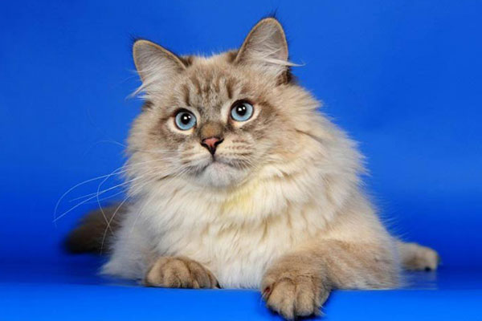
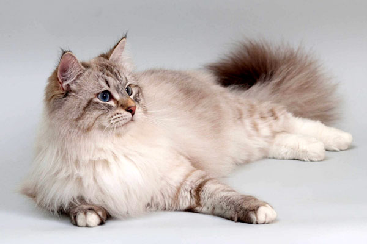

Невская маскарадная кошка — длинношёрстная порода, имеющая пойнтовый окрас, придающий ей сходство с сиамской или тайской кошкой, и голубые яркие глаза. Является подвидом сибирской кошки. Преимущественно разводится в российских питомниках. Название получила из-за окраски морды, напоминающей маску.
Страна происхождения:СССР
Год происхождения:1998
История происхождения
История невской маскарадной породы кошек начинается в XX веке. Это довольно молодая порода, набирающая все большую популярность. Разводить невских маскарадных стали с 1989 г. Официально порода была признана международными организациями в 1992 г. Но не все организации признают ее как самостоятельную породу. Происхождение невских маскарадных кошек восходит к сибирским кошкам, которые проживали многие века на территории Сибири. Это так называемая аборигенная порода, сформировавшаяся самостоятельно под влиянием окружающей среды. «Сибиряки» являются прародителями многих современных пород полудлинношерстных кошек. В России такие кошки известны с XVIII века, со времен Петра Великого. Точного места происхождения породы неизвестно. Разведением маскарадных котов впервые занялись в Санкт-Петербурге, в клубе «Котофей» под руководством селекционера Ольги Мироновой. Собственно, это и дало название породе — невская — в честь реки, на которой стоит город. Вторым названием — маскарадная — кошка обязана своеобразному окрасу: темная шерсть на морде похожа на маску. Дальнейшие селекционные работы продолжились в Москве. Питерские и московские питомники предпочитали вести работы независимо друг от друга. Это дало широкое поле для деятельности и привело к большему разнообразию так называемых неваков.
Описание породы
Невская маскарадная кошка — кошка с длинной шерстью и голубыми глазами, которые могут иметь разные оттенки синего цвета: от светлого до сапфирового. Шерсть маскарадной кошки, как и шерсть сибирской, гипоаллергенна. Аллергия на невскую кошку встречается реже, чем на другие породы, хотя обнаруживаются исключения. Чтобы убедиться, что невская маскарадная не вызовет аллергию, нужно сделать анализ шерсти. Мнение, согласно которому аллергенны исключительно самки, ошибочно. Стандарт WCF предусматривает следующие характеристики. Общая характеристика: сильные, массивные, мускулистые кошки среднего или крупного размера. Кошки значительно меньше котов. Крепкий костяк с хорошо развитой мускулатурой; плотное, массивное, средней длины. Конечности средней высоты, сильные, формирующие прямоугольник с телом. Сильная, короткая, мощная шея, широкая грудь; тело пропорционально до создания прямоугольного очертания. Лапы большие, круглые, с пучками шерсти между пальцами. Голова в форме короткой широкой трапеции в хорошей пропорции к телу, массивная. Лоб широкий, слегка округлённый. Плавный переход от невысокого лба к широкой прямой спинке носа. Нос средней длины, широкий, в профиль просматривается небольшое углубление, но без стопа. Скулы низкие, щеки полные, челюсти хорошо развиты. Подбородок широкий, достаточно сильный, но не выступающий. Уши средней величины, широкие в основании, расставленные на расстоянии более ширины одного уха в основании. Наружная линия уха вертикальна, наружный край основания уха расположен чуть выше уровня глаз. Уши слегка наклонены вперед. Кончики закруглены. Желательны кисточки и щетки. Глаза большие, округлые, широко и слегка косо поставленные. Цвет глаз голубой, насыщенный, равномерно прокрашенный. Хвост широкий и сильный в основании, длиной почти до лопаток, хорошо опушенный. Кончик округлённый. Шерсть полудлинная; покровный волос твердый, блестящий, водоотталкивающий, удлиняющийся от лопаток к крупу, опускающийся на бока и верхнюю часть хвоста. На боках шерсть более мягкая, слабо прилегающая, очень плотная. Подшерсток двойной, зависит от сезона: незначительный короткий плотно прилегающий в теплое время, зимой — обильный длинный, очень густой и плотный, с прекрасной текстурой. Украшающая шерсть длинная, но плотная, в виде гривы, полного воротника и жабо. Пышные «штанишки» и отлично опушенный хвост. Короткая шерсть на лопатках. При сезонной линьке от украшающей шерсти почти ничего не остается.
Окраска породы
Вариантов окрасов для этой породы всего шесть. Самые распространенные — «сил пойнт» (Seal-point), который свое название получил от английского слова «тюлень», и «сил тебби поинт» (seal tabby point). Ещё один вид окраса невской маскарадной кошки — «рэд пойнт» (Red-point). Этот тон подразумевает переходы окраса шерсти в рыжий спектр. Также есть следующие окраски этой породы: — «блю пойнт» (Blue-point) — голубоватые цвета в шерсти; — «черепаховый пойнт» (Turtle-point), как правило, встречается только у кошек. Стали чаще встречаться экземпляры с серебристыми оттенками на всех других пойнтах. Белые «носочки» на лапах и такого же цвета и тона пятна на мордочке могут быть у всех шести окрасов. Невский маскарадный биколор не требует симметричности и упорядоченности форм пятнышек. Шоколадно-лиловый окрас не соответствует выставочным стандартам.
Характер
Отзывы о характере невских маскарадных кошек в основном положительные. Они довольно самостоятельны и не требуют большого внимания к себе. Представители породы отличаются уравновешенностью, крепкой нервной системой и здоровой психикой. Манеры поведения можно назвать аристократическими: животные грациозны, аккуратны, ласковы. Они дружелюбны, общительны, но при этом ненавязчивы. Умеренно игривы и активны. Плохо переносят одиночество. Отличаются свободолюбием, порой упрямством. Представители породы сильно привязаны к хозяевам, считаются преданными, терпеливыми, незлопамятными животными, наделенными незаурядным интеллектом. Невская маскарадная предпочитает партнёрские отношения, является хорошим компаньоном. Эти кошки рекомендуются семьям с детьми, малышей защищают, проявляют внимание и заботу, охотно играют с детьми постарше. Неагрессивны: взрослая кошка предпочтет удалиться, нежели пустит в ход зубы и когти. К незнакомцам относятся настороженно. Одно из достоинств породы — дружелюбие по отношению к прочим домашним питомцам.
Здоровье
Подобно многим аборигенным породам, обладают крепким иммунитетом, маловосприимчивы к болезням. Редко подвержены наследственным заболеваниям. Основная опасная для них болезнь — гипертрофическая кардиомиопатия. Невские маскарадные кошки являются долгожителями среди своих сородичей — встречаются среди них представители, которые живут на свете больше 10-20 лет.
